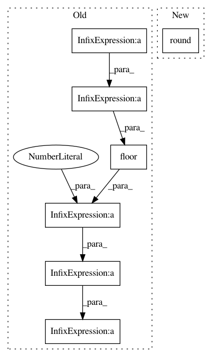

bcf9bf22d99262e2483b5eea61db28ba3aed0bf4,mir_eval/melody.py,,resample_melody_series,#Any#Any#Any#Any#,127
Before Change
if frequency == 0:
frequencies_held[n + 1] = frequencies_held[n]
// Compute new timebase. Rounding/linspace is to avoid float problems.
times = np.round(times*1e10)*1e-10
times_new = np.linspace(0, hop*int(np.floor(times[-1]/hop)), int(np.floor(times[-1]/hop)) + 1)
times_new = np.round(times_new*1e10)*1e-10
// Linearly interpolate frequencies
frequencies_resampled = scipy.interpolate.interp1d(times, frequencies_held)(times_new)
// Retain zeros
frequency_mask = scipy.interpolate.interp1d(times, frequencies, "zero")(times_new)
After Change
if frequency == 0:
frequencies_held[n + 1] = frequencies_held[n]
// Round to avoid floating point problems
times = np.round(times, 10)
// Linearly interpolate frequencies
frequencies_resampled = scipy.interpolate.interp1d(times, frequencies_held)(times_new)
// Retain zeros
frequency_mask = scipy.interpolate.interp1d(times, frequencies, "zero")(times_new)
In pattern: SUPERPATTERN
Frequency: 3
Non-data size: 7
Instances
Project Name: craffel/mir_eval
Commit Name: bcf9bf22d99262e2483b5eea61db28ba3aed0bf4
Time: 2014-04-30
Author: craffel@gmail.com
File Name: mir_eval/melody.py
Class Name:
Method Name: resample_melody_series
Project Name: Microsoft/nni
Commit Name: e3c8552f3cad8b5ab0128a6eb27e3190506fe9d8
Time: 2019-08-04
Author: suiguoxin@gmail.com
File Name: src/sdk/pynni/nni/parameter_expressions.py
Class Name:
Method Name: quniform
Project Name: Microsoft/nni
Commit Name: afb4e78c5c9c4782482777fd8587c636711ab2e5
Time: 2019-08-04
Author: suiguoxin@gmail.com
File Name: src/sdk/pynni/nni/gridsearch_tuner/gridsearch_tuner.py
Class Name: GridSearchTuner
Method Name: _parse_quniform